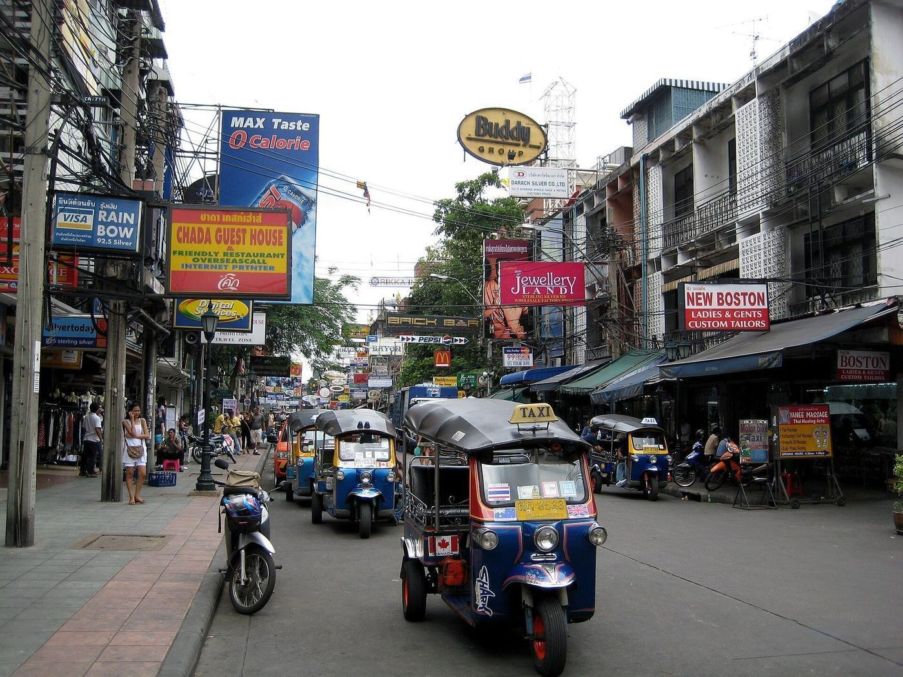
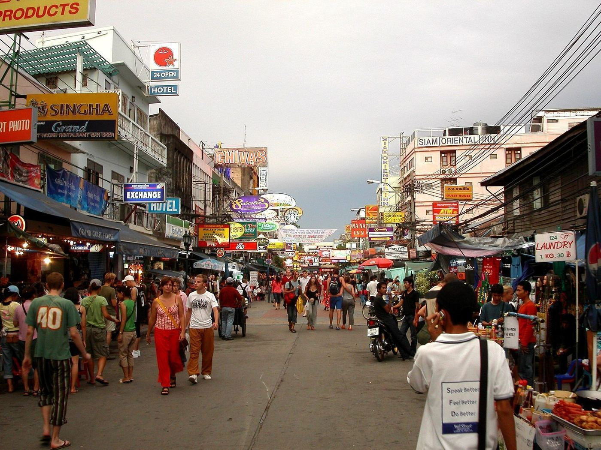
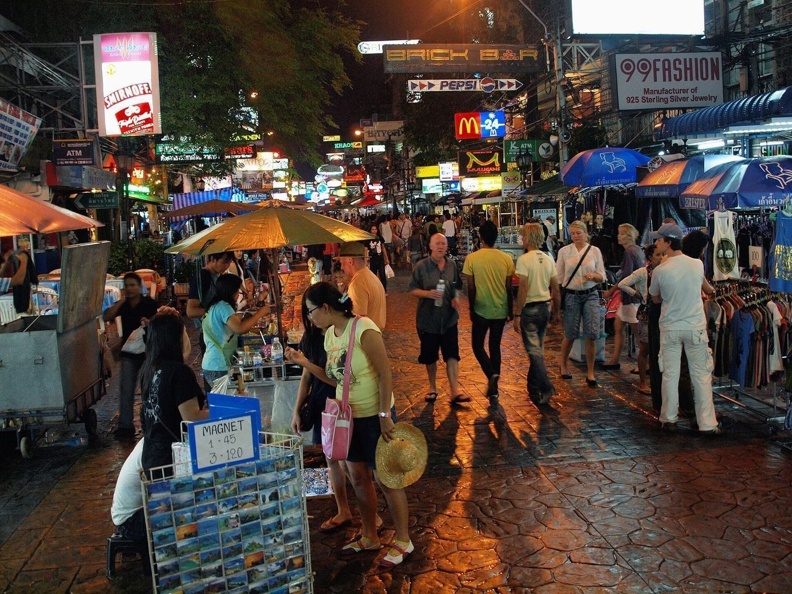
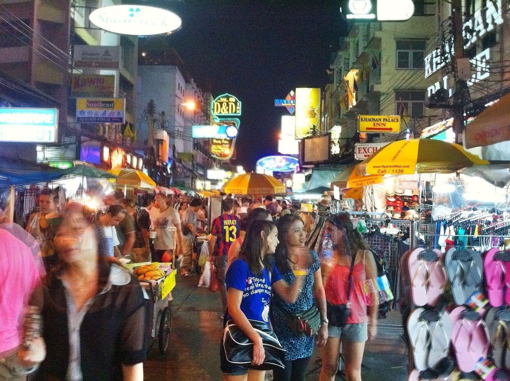
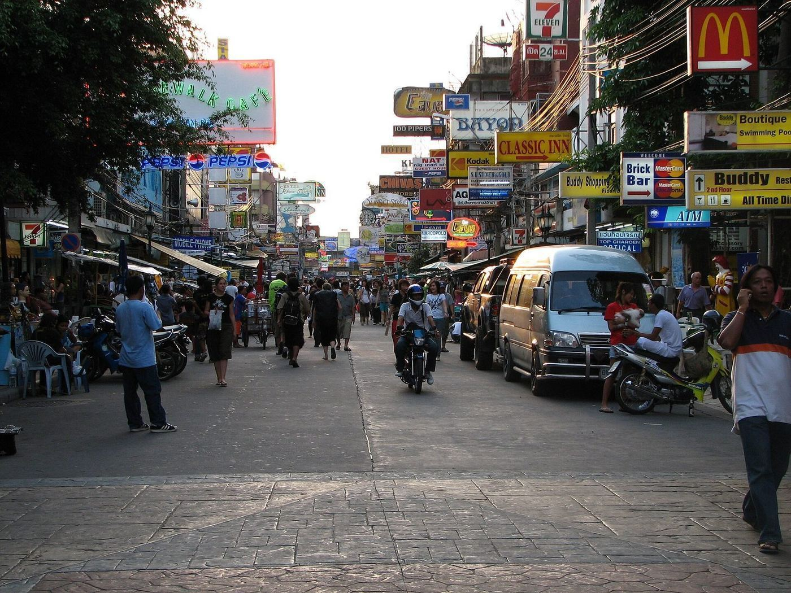
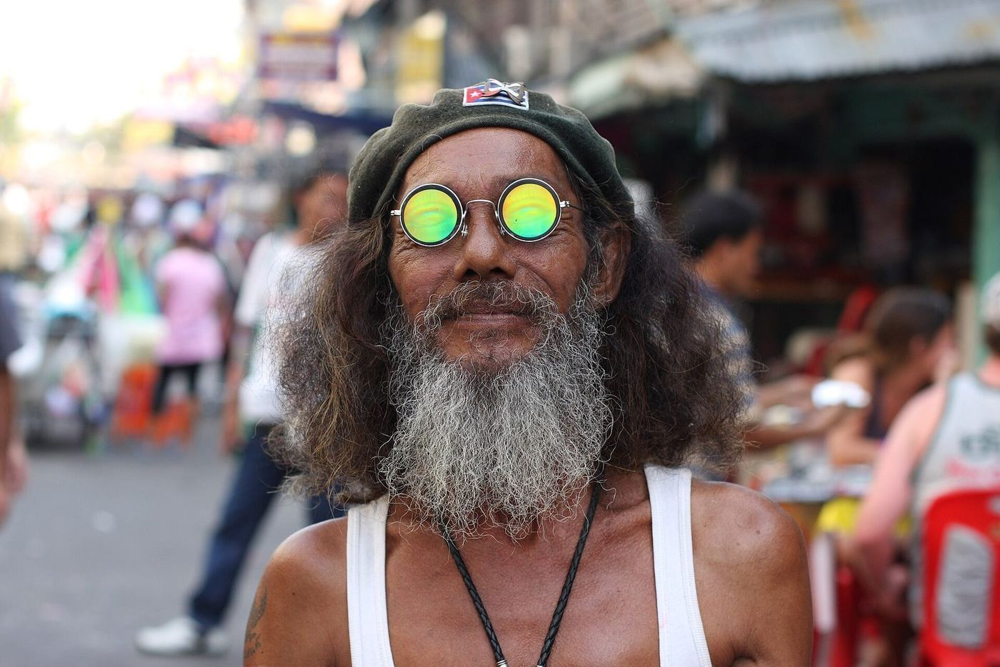
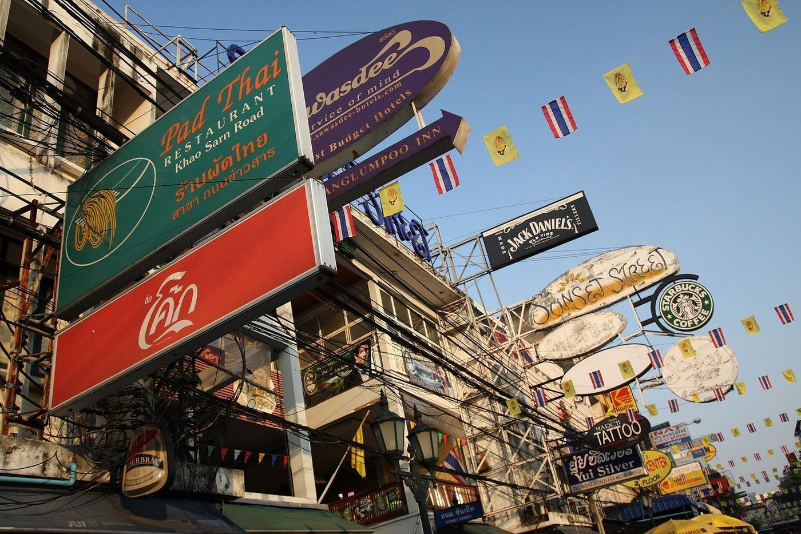

🔴 이 글은 「가지 마라」는 글이 아닙니다. 20년 전에 들었던 그 카오산과 지금의 카오산이 왜 다른지, 그리고 그럼에도 무엇이 남았는지에 대한 글입니다.
1. 먼저 숫자
| 길이 | 약 300m — 걸어서 4분이면 끝난다 |
| 이름의 뜻 | 「빻은 쌀」 — 원래 쌀 도매 거리였다 |
| 배낭여행자 거리가 된 시점 | 1980년대 |
| 게스트하우스 1박 (1990년대) | 🔴 US$1~3 수준으로 회자된다 |
| 지금 이 일대 호텔 | 부티크 호텔·호스텔이 다수, US$20~80대 |
| 플랫폼 상품 수 | Klook 5건 — 상품은 거의 없는데 모든 플랫폼의 「방콕 소개」 첫 문장에 등장한다 |
🔴 마지막 줄이 이 거리의 성격이다. 카오산은 팔 상품이 아니라 상징이다.
2. 1단계 — 쌀 거리가 배낭여행자 거리가 된 이유 (1980년대)
카오산로드는 왕궁에서 도보 15분이다. 원래 쌀 도매상이 늘어선 평범한 상업 거리였다.
왜 여기에 배낭여행자가 모였나. 세 가지가 겹쳤다.
① 지리. 왕궁·왓포·왓아룬이 전부 걸어서 닿는다. 그리고 당시 방콕에는 지하철도 경전철도 없었다. 관광지에 걸어갈 수 있는 곳에 싸게 자는 것이 유일한 합리적 선택이었다.
② 값. 쌀 도매가 쇠퇴하면서 빈 샵하우스가 생겼고, 그걸 게스트하우스로 개조하는 비용이 거의 들지 않았다. 방 하나에 매트리스 하나면 됐다.
③ 시대. 🔴 1970~80년대는 「히피 트레일」의 끝물이었다. 유럽에서 육로로 이스탄불–테헤란–카불–델리–카트만두를 거쳐 동남아로 내려오는 경로가 있었고, 이란 혁명(1979)과 소련의 아프가니스탄 침공(1979)으로 그 육로가 끊기자 여행자들이 항공편으로 동남아에 직접 들어오기 시작했다. 방콕이 그 관문이었다.
🔴 그래서 카오산은 「태국이 만든 것」이 아니다. 세계 여행 경로가 바뀌면서 떠밀려온 사람들이 만든 거리다.
3. 2단계 — 「성지」가 된 시기 (1990년대~2000년대 초)







이때가 원장님이 기억하시는 그 카오산이다.
무엇이 있었나.
- 정보 게시판. 인터넷이 없거나 비싸던 시절, 게스트하우스 벽의 코르크판이 정보 인프라였다. 「내일 아침 앙코르와트행 미니밴 두 자리」 같은 쪽지가 붙었다
- 중고 책 교환. 론리플래닛을 다 읽으면 다음 사람에게 넘겼다
- 여행사 골목. 비자 대행, 국경 넘는 버스, 가짜 학생증
- 값. 하루 US$5로 살 수 있었다
결정타는 소설과 영화였다. 알렉스 갈랜드의 소설 『비치』(1996)가 카오산의 게스트하우스에서 시작하고, 2000년 레오나르도 디카프리오 주연으로 영화화되면서 🔴 카오산은 「배낭여행」이라는 개념의 시각적 아이콘이 됐다.
한국에서는 여기에 하나가 더 붙는다. 1990년대 말~2000년대 초 배낭여행 붐과 여행 커뮤니티(태사랑 등), 그리고 여행 에세이 출판이 겹치며 「카오산 = 배낭여행의 성지」라는 표현이 한국어로 굳었다.
🔴 그러니까 원장님의 로망은 정확히 이 시기의 것이다. 그리고 그 시기는 실제로 있었다.
4. 3단계 — 무엇이 그 거리를 끝냈나 (2000년대 중반~)
「변했다」는 평가가 나오는 이유는 감성이 아니라 구조다. 다섯 가지가 순서대로 일어났다.
① 정보가 벽에서 손으로 옮겨갔다
게시판·중고책·여행사 골목이 하던 일을 스마트폰이 전부 흡수했다. 항공권·숙소·국경 정보가 손 안에 있으면, 「정보를 얻으러 가는 거리」는 존재 이유를 잃는다. 🔴 카오산의 핵심 기능이 기술로 대체된 것이다.
② 숙소가 분산됐다
BTS(1999)·MRT(2004)가 깔리면서 관광지에서 멀어도 되는 구조가 됐다. 수쿰빗·실롬·아리 어디에 자도 30분이면 왕궁에 간다. 카오산의 지리적 우위가 사라졌다.
③ 에어비앤비와 호스텔 체인
「싸게 자는 것」이 카오산의 독점이 아니게 됐다. 방콕 전역에 디자인 호스텔이 생겼다.
④ 손님이 바뀌었다
장기 배낭여행자(한 달 이상)에서 주말 파티 관광객으로 무게중심이 옮겨갔다. 그러자 거리도 바에 맞춰 재편됐다. 🔴 이건 카오산이 「망한」 게 아니라 다른 수요에 적응한 것이다.
⑤ 2020~2021년의 공백
팬데믹으로 이 거리가 거의 통째로 문을 닫았다. 방콕시는 그 사이에 약 4,800만 바트를 들여 보도를 넓히고 전선을 지중화하고 노점 구역을 정비했다. 2021년에 재개장했다.
🔴 그래서 지금의 카오산은 「방치된 옛 거리」가 아니라 「정비된 관광거리」다. 원장님이 보신 「많이 변했다」는 평가의 실체가 이것이다. 낡아서 변한 게 아니라 새로 깔아서 변했다.
5. 지금 거기엔 무엇이 있나 — 있는 그대로
있는 것
- 300m에 압축된 밀도. 밤 9시 이후 도로가 보행자로 꽉 찬다
- 전갈·귀뚜라미 튀김 노점 (🔴 대부분 관광객 사진용이다. 태국인은 안 먹는다)
- 팟타이 노점, 버킷 칵테일, 라이브 밴드, 문신·머리땋기
- 람부뜨리 로드(Rambuttri) — 카오산 바로 뒤 반달 모양 골목. 🔴 더 조용하고 나무가 있고 노포 카페가 남아 있다. 옛 카오산의 결에 가장 가까운 게 여기다
없는 것
- 정보 게시판. 중고 책 교환. US$3 도미토리
- 한 달씩 머무는 장기 여행자 커뮤니티
- 🔴 「여기서만 얻을 수 있는 것」
거주자 커뮤니티의 평가는 명확하다 — 회피 대상으로 반복 지목된다. 이유는 호객·바가지·소음이다. 다만 🔴 「한 번은 봐야 한다」는 의견은 반대하는 사람들 사이에도 있다.
6. 🔴 그럼에도 가야 하는 이유가 있다면
이 거리의 값어치는 지금 파는 물건에 있지 않다. 역사에 있다.
- 여기는 세계 여행 경로가 바뀌면서 생긴 거리다. 이란 혁명과 아프가니스탄 전쟁이 300m짜리 태국 골목을 만들었다
- 여기는 정보가 아날로그이던 시대의 인프라가 어떻게 생겼는지를 보여주는 마지막 현장이다
- 그리고 여기는 🔴 기술이 한 거리의 존재 이유를 통째로 없앨 수 있다는 것의 표본이다
한국과 비교하면: 이태원의 「외국인 거리」 기능이 온라인과 도시 확산으로 흩어진 과정, 또는 명동이 「한국 청년의 거리」에서 「관광 상권」으로 바뀐 과정과 구조가 같다. 🔴 거리가 무너진 게 아니라, 그 거리가 독점하던 기능이 사라진 것이다.
7. 실무 — 이 여행에서 어떻게 다룰 것인가
우리 계획 1안과 4안에 10/8 밤 21:00, 「선택 항목, 30분」으로 넣었다. 그 배치의 이유는 이렇다.
| 언제 | 🔴 밤이 본편이다. 낮에는 그냥 좁은 상가 거리다 |
| 얼마나 | 🔴 30분. 저녁 전체를 여기 쓰면 만족도가 떨어진다는 후기가 지배적이다 |
| 어디서 오나 | 왕궁·왓사켓에서 도보 15분. 10/8은 왕실 바지선을 보고 야오와랏에서 저녁을 먹은 뒤라 동선이 이어진다 |
| 같이 볼 것 | 🟢 람부뜨리 로드를 꼭 함께 걸으시라. 카오산에서 골목 하나만 넘으면 되고, 그쪽이 원장님이 기억하는 결에 훨씬 가깝다 |
| 주의 | 🔴 소지품. 툭툭 보석점·양복점 사기가 현재진행형이다. 「오늘 왕궁 문 닫았다」와 같은 계열이다 |
| 먹을 것 | 팟타이 노점은 관광객 가격이다. 미식은 야오와랏·방락에서 이미 해결했으니 여기선 맥주 한 잔이면 충분하다 |
🔴 기대치 조정이 이 항목의 전부다. 「20년 전 그 거리」를 찾으러 가면 실패하고, 「그 거리가 있던 자리」를 보러 가면 30분이 아깝지 않다.
8. 한 줄로 줄이면
카오산로드는 사라진 게 아니라 이사했다. 정보는 스마트폰으로, 값싼 잠자리는 도시 전역으로, 장기 여행자 커뮤니티는 온라인으로 옮겨갔다. 남은 건물과 300m 도로는 그대로인데 그 안에 있던 기능이 전부 빠져나간 것이다.
그 빈자리에 파티 관광객이 들어왔다. 그게 지금의 카오산이다.
이어 읽기
- 「동양의 베니스는 어쩌다 도로의 도시가 됐나」 — 왜 왕궁 옆에 그런 거리가 생길 수 있었나
- 「야오와랏 — 화교 자본이 태국 경제를 쥔 경위」 — 같은 도시의 다른 「거리의 생애」